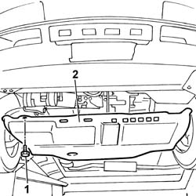

7055B54 UNDER-ENGINE GUARD - R R
- Path
- Procedures > 70 FITTINGS > 7055 MOULDINGS ON PROTECTIONS > 7055B EXTERIOR PROTECTIONS > 7055B54 UNDER-ENGINE GUARD - R R
- Kind
- repair procedure (removal / refitting; the operation number is the code)
- Applies to
- all engines; all production periods
- Interactive page
- https://sloeber94.github.io/elrnDB-fDct/en/#/244001539
Applies to: all engines; all production periods
 Removing
Removing
 Refitting
Refitting- Position the vehicle on the lift.
- Raise the vehicle.
1. Undo the bolts fixing the shield under the engine.
2. Remove the shield under the engine.

Applies to: all engines; all production periods
Refitting
Removing- Fit the shield under the engine in the housing on the vehicle.
- Tighten the bolts fixing the shield under the engine.
 | Value - daNm | Fastening | Component | Ø |
|---|---|---|---|---|
. | 3.1 | Bolts | UNDER-ENGINE PROTECTION/GUARD | M10 |
- Lower the lift.
- Remove the vehicle from the lift.
Topics that link to this page (179)
- 0010T12 ENGINE OIL AND FILTER REPLACE
- 0010T20 COOLANT CHECK DENSITY AND TOP UP IF NECESSARY
- 0010T40 MANUAL GEARBOX OIL CHECK LEVEL AND TOP UP IF NECESSARY
- 0010T41 MANUAL GEARBOX OIL CHECK LEVEL AND TOP UP IF NECESSARY
- 0010T70 POWER ASSISTED STEERING FLUID - REPLACE
- 1004B10 POWER UNIT WITH MANUAL GEARBOX - R + R
- 1004B12 POWER UNIT WITH MANUAL GEARBOX - R+R FOR VERSIONS WITH A/C
- 1008A42 GEAR BOX LEFT RIGID MOUNT - R R
- 1008A46 CAM SHAFT LEFT RIGID MOUNT - R R
- 1008B10 POWER UNIT FRONT MOUNT (TIMING SIDE) FLEXIBLE BLOCK - REPLACE
- 1008B30 GEARBOX SIDE MOUNT FLEXIBLE BLOCK - REPLACE
- 1008C32 GEARBOX LOWER REACTION ROD ' -R.R.
- 1008C34 BRACKET ON GEARBOX FOR LOWER REACTION LINK R R
- 1016B10 SINGLE CYLINDER HEAD EXTENSION - CHANGE GASKET
- 1016C10 SINGLE CYLINDER HEAD, REMOVED - OVERHAUL
- 1016C11 SINGLE CYLINDER HEAD-R R GASKET FOR VERSIONS WITH AIR CONDITIONER
- 1020A10 CRANKCASE SUMP - R&R AND REPLACE GASKET
- 1020A20 CRANK CASE OIL SUMP - R + R CLEAN SEALS FOR SEALANT APPLICATION
- 1020A26 CRANKCASE SUMP - R R CLEAN MATING SURFACES AND APPLY SEALANT FOR VEHICLE WITH AIR CONDITIONER
- 1020A30 ENGINE OIL DRAIN PLUG - REPLACE
- 1020D13 FRONT CRANKSHAFT OIL SEAL COVER- R+R AND REPLACE GASKETS FOR VERSIONS WITH AIR CONDITIONER
- 1020D14 FRONT CRANK SHAFT OIL SEAL COVER - R + R AND REPLACE SEALS FOR VERSIONS WITH OIL PUMP ON CRANK SHAFT, TIMING SIDE
- 1020D18 FRONT CRANK SHAFT COVER OIL SEAL - REPLACE
- 1020D20 FRONT CRANKSHAFT COVER OIL SEAL - REPLACE FOR VERSIONS WITH AIR CONDITIONER
- 1020D28 FLYWHEEL SIDE OIL SEAL COVER - R+R FOR VERSIONS WITH AIR CONDITIONER
- 1020D38 FLYWHEEL SIDE OIL SEAL - REPLACE
- 1024B10 ENGINE FLYWHEEL - R + R FOR VERSIONS WITH MANUAL GEARBOX
- 1024B12 ENGINE FLYWHEELS RR FOR VERSIONS WITH MANUAL GEARBOX AND AIR CONTIONER
- 1024B54 ENGINE FLYWHEEL PROTECTION R R
- 1028H10 PISTON WITH CONNECTING ROD - R R
- 1028H11 PISTON CONNECTING ROD SET - R R
- 1032B10 TOOTHED TIMING BELT - R + R FOR TIMING ADJUSTMENT OR REPLACEMENT
- 1032B14 TOOTHED TIMING BELT - R + R FOR TIMING ADJUSTMENT OR REPLACEMENT VERSIONS WITH AIR CONDITIONER
- 1032B46 TOOTHED DRIVE PULLEY - R + R
- 1032B47 TOOTHED DRIVE PULLEY - R R FOR VERSIONS WITH AIR CONDITIONER
- 1032B52 TOOTHED DRIVEN PULLEY (ONE) - R + R
- 1032B53 DRIVEN TOOTHED PULLEY (ONE) - R R FOR VERSIONS WITH AIR CONDITIONER
- 1032B62 A/C DUCT PULLEY - R R
- 1032C18 MOBILE TIMING SYSTEM TENSIONER - R + R FOR 24 VALVE ENGINES
- 1032C19 MOBILE TIMING BELT TENSIONER - R R FOR VERSIONS WITH AIR CONDITIONER
- 1032C31 FIXED TIMING TENSIONER - R R
- 1032C32 FIXED TIMING SYSTEM TENSIONER (ONE) R + R
- 1032D12 TIMING SYSTEM PROTECTIVE COVER(S) - R + R
- 1036B10 OVERHEAD CAMSHAFT - R R ON VEHICLE
- 1036B36 FRONT CRANKSHAFT OIL SEAL-R R WITH TIMING BELT REMOVED
- 1036B50 FLYWHEEL ON CAMSHAFT - R.R.
- 1036L10 CAMSHAFTS IN CYLINDER HEAD EXTENSION - R R - INCLUDES CYLINDER HEAD EXTENSION REPLACEMENT IF NECESSARY
- 1036L30 FRONT OIL SEAL OF INTAKE CAMSHAFT IN CYLINDER HEAD EXTENSION REPLACE
- 1036L52 EXHAUST CAMSHAFT FRONT SEAL IN CAMSHAFT HOUSING - REPLACE
- 1040A14 FUEL TANK - R + R FOR REPLACEMENT
- 1040A30 OIL SEAL COVER, FLY WHEEL SIDE - R + R AND REPLACE SEALS
- 1040A32 LABEL NOT AVAILABLE
- 1040B30 FUEL DELIVERY LINE - R R
- 1040B32 FUEL FILLER PIPE UNION SLEEVE - R + R
- 1040B52 FUEL RETURN LINE - R R
- 1040B54 FUEL LINE FROM MANIFOLDS - R R
- 1040B56 FUEL RETURN LINE - R R
- 1048A50 AIR INLET PIPE TO TURBO CHARGER - R + R
- 1048B12 RIGID PIPE CARRYING AIR BETWEEN TURBOCHARGER AND INLET MANIFOLD - R+R
- 1056B14 THROTTLE CASE - R + R
- 1056B38 STEPPING MOTOR ACTUATOR ON THROTTLE CASING - R + R
- 1056B46 INTAKE AIR TEMPERATURE SENSOR - R + R
- 1060E10 PRESSURE PUMP - R R
- 1060E30 PRESSURE PUMP PULLEY - R R
- 1060E40 SUPPLEMENTARY PRESSURE PUMP - R R
- 1060F50 FUEL RETURN MANIFOLD - R R
- 1060F52 PIPE TO RETURN MANIFOLD - R R
- 1060G20 RPM AND TIMING SENSOR - R R
- 1072B10 INLET MANIFOLD - R + R AND REPLACE SEAL
- 1072B11 INTAKE MANIFOLD - R R AND REPLACE GASKET FOR VERSIONS WITH AIR CONDITIONER
- 1072C10 EXHAUST MANIFOLD - R + R AND REPLACE SEAL
- 1076B50 EXHAUST PIPE ATTACHMENT TO ENGINE - R + R
- 1080C82 E.G.R. - VALVE HEAT EXCHANGER ASSEMBLY - CONNECTOR PIPES - R.R.
- 1080D30 ENGINE OIL RECOVERY PIPE - R + R
- 1080D34 ENGINE OIL VAPOUR SEPARATOR - R + R
- 1080E41 TANK - SEPARATOR LINE - R R
- 1084A16 OIL DIP STICK PIPE - R R
- 1084A42 ENGINE OIL TEMPERATURE SENDER UNIT - R + R
- 1084B10 ENGINE OIL PUMP - R + R WITH CRANKCASE SUMP REMOVED
- 1084B12 ENGINE OIL PUMP - R+R
- 1084B16 ENGINE OIL PUMP - R+R VEHICLES WITH A/C
- 1084B26 EMGINE OIL INTAKE DUCT - R R
- 1084B30 ENGINE OIL FILTER R R
- 1084B36 ENGINE OIL FILTER AND HEAT EXCHANGER MOUNTING - R.R.
- 1084B40 ENGINE OIL DELIVERY PIPE TO TURBOCHARGER - R + R
- 1084B42 ENGINE OIL RETURN PIPE FROM TURBO - R + R
- 1084C10 STAFFA DI SUPPORTO DEL RADIATORE RAFFREDDAMENTO OLIO MOTORE - R.R.
- 1088B20 ENGINE COOLING RADIATOR - R + R
- 1088B24 ENGINE COOLING RADIATOR - R R FOR AIR CONDITIONED VERSIONS
- 1088B32 ENGINE COOLING RADIATOR SUPPORT BEAM - R R
- 1088C10 WATER PUMP - R + R
- 1088C12 WATER PUMP - R+R FOR VERSIONS WITH AIR CONDITIONER
- 1088C30 THERMOSTAT UNIT - R+R
- 1088D10 LOWER SLEEVE FOR COOLANT OUTLET FROM RADIATOR - R + R
- 1088D14 UPPER SLEEVE FOR COOLANT INLET TO RADIATOR - R + R
- 1088D16 RIGID PIPE BETWEEN RADIATOR HOSES AND THERMOSTAT - R.R.
- 1088D18 HOSE BETWEEN RIGID PIPE AND THERMOSTAT - R.R.
- 1088D20 COOLANT INLET SLEEVE TO WATER PUMP - R + R
- 1088D22 WATER PUMP INLET CONNECTOR - R.R.
- 1088D24 RIGID PIPE FOR COOLANT INLET TO WATER PUMP - R + R
- 1088D26 RIGID INTAKE PIPE TO WATER PUMP - R+R FOR VERSIONS WITH A/C
- 1088D46 RIGID PIPE BETWEEN SLEEVES FROM WATER PUMP TO RADIATOR - R R
- 1088D47 OIL EXCHANGE SLEEVE - R R
- 1088D51 COOLANT SUPPLY PIPE FROM CRANKCASE TO OIL/WATER HEAT EXCHANGER - R.R. WITH REAR ENGINE SUPPORT REMOVED
- 1088D67 COOLANT PIPE BETWEEN COOLANT RESERVOIR AND THERMOSTAT - R.R.
- 1088E11 FANS WITH SINGLE ENGINE DUCT - R+R
- 1088E16 LEFT ENGINE COOLING FAN OR FANS - R.R. FOR VERSIONS WITH AIR CONDITIONING
- 1088E17 RIGHT ENGINE COOLING FAN - R.R. FOR VERSIONS WITH AIR CONDITIONING
- 1092A10 CRANKSHAFT SERVICES PULLEY - R.R.
- 1092A12 CRANKSHAFT PULLEY - R+R FOR VERSIONS WITH AIR CONDITIONER
- 1092B40 AIR CONDITIONER COMPRESSOR/ALTERNATOR DRIVE BELT - R + R
- 1092B72 POWER STEERING PUMP DRIVE BELT - ALTERNATOR - R&R
- 1092B80 AUXILIARY BELT FIXED TENSIONER (ONE) - R+R
- 1092B82 AUXILARY BELT MOBILE TENSIONER (ONE) -R+R
- 1092C11 POWER STEERING PUMP DRIVE BELT - R R FOR VERSIONS WITH AIR CONDITIONER
- 1092G10 SINGLE ENGINE BELT R R
- 1092G14 ENGINE COMPONENT SINGLE BELT MOBILE TENSIONER - R + R
- 1092G20 ENGINE COMPONENT SINGLE BELT FIXED TENSIONER - ONE - R + R
- 1810A20 CLUTCH - R + R
- 1820A24 THRUST BEARING LINKAGE - R + R
- 1820B57 PIPE FROM VIBRATION DAMPER TO SLAVE CYLINDER
- 1820B58 CLUTCH HYDRAULIC CIRCUIT VIBRATION DAMPER - R+R
- 2110A10 MANUAL GEARBOX AND DIFFERENTIAL - R + R
- 2110A14 MANUAL GEARBOX AND DIFFERENTIAL - R + R FOR VERSIONS WITH A.B.S.
- 2110B40 5TH SPEED GEARS OF MANUAL GEARBOX WITH DIFFERENTIAL - R + R ON VEHICLE
- 2110C30 GEARBOX REAR COVER - R + R.
- 2125C10 TRANSMISSION HAND CONTROL ASSEMBLY - ADJUSTMENT/INSPECTION AND EV. LUBIRCATION OF FIXINGS
- 2710A10 DRIVE SHAFT WITH JOINTS (ONE), L/H OR R/H - R + R
- 2710A22 DIFFERENTIAL AND CONSTANT VELOCITY JOINT (ONE) L/H OR R/H - R + R - INCLUDES BOOT REPLACEMENT
- 2710A31 INTERMEDIATE DRIVE SHAFT - R R
- 2710A35 INTERMEDIATE DRIVE SHAFT MOUNT - R R
- 3330D12 BRAKE SERVO - R R FOR RIGHT HAND DRIVE VERSIONS - INCLUDES SEPARATION FROM MASTER CYLINDER(PUMP)
- 3330D30 VACUUM PUMP - R+R
- 3330E46 RIGID PIPE (ONE) FROM MASTER CYLINDER PUMP TO LEFT FRONT BRAKE - R.R.
- 3330E51 RIGID PIPE (ONE), LH OR RH, FROM MASTER CYLINDER TO FITTING - R R
- 3340A12 ABS HYDRAULIC AND ELECTRONIC CONTROL UNIT
- 3340A80 ABS SYSTEM WIRING BUNDLE - R R OR REPLACE
- 3340B10 HOSE TO L/H OR R/H FRONT BRAKES (ONE) R+R
- 3340B52 PUMP/CENTRAL OBS PIPE - R R
- 3340B55 CENTRAL BRAKE PIPE TO LH - R R
- 3340B56 RIGID PIPE FROM HYDRAULIC CONTROL UNIT TO RIGHT FRONT BRAKE - R.R.
- 4130A10 POWER STEERING BOX - R+R - CHECK TOW-IN IF NECESSARY SEPARATELY - INCLUDES BLEEDING
- 4130B20 POWER STEERING PUMP R R
- 4130B24 POWER STEERING PUMP R R FOR VERSIONS WITH AIR CONDITIONER
- 4130B34 SUPPLY PIPE FROM FLUID RESEVIOR TO POWER STEERING PUMP R R
- 4130B40 OUTLET PIPE FROM PUMP TO POWER STEERING CASE R R
- 4130B42 RETURN PIPE FROM POWER STEERING CASE TO POWER STEERING FLUID RESEVIOR R R
- 4410B44 FRONT SUSPENSION LOWER TRACK CONTROL ARM - R.R.
- 4410B64 BALL JOINT (ONE) ON L/H OR R/H FRONT PILLAR - REPLACE
- 4410C10 FRONT SUSPENSION STABILIZER BAR - R+R - CHECK WHEEL GEOMETRY SEPARATELY
- 4410D13 FRONT SUSPENSION BEAM - R R
- 5020A10 HEATER BOX - R+R
- 5040A20 AIR CONDITIONER COMPRESSOR - R+R - INCLUDES FLUID LEVEL CHECK AND TOP UP IF NECESSARY
- 5040A26 COMPRESSOR MOUNT - R R
- 5040A40 AIR CONDITIONER CONDENSER - R+R
- 5040A50 PIPE FROM COMPRESSOR TO AIR CONDITIONER CONDENSER - R+R
- 5040A52 PIPE FROM CONDENSER TO DEHYDRATING FILTER - R+R
- 5040A58 PIPE FROM EXPANSION VALVE TO COMPRESSOR - R+R
- 5040A80 EXPANSION/CONNECTION PIPE - R R
- 5040B22 AIR CONDITIONING SYSTEM DE-MISTER THERMOSTAT - R+R
- 5040B30 EXPANSION VALVE (TUBE ORIFICE) - R+R
- 5040C10 AIR CONDITIONER CONTROL SUPPORT - R+R
- 5040C30 FAN MOTOR - R+R
- 5040C50 AIR CONDITIONER HEATER RADIATOR - R+R
- 5040C56 CONNECTING PIPE BETWEEN TAP AND AIR CONDITIONING HEATER RADIATOR - R.R.
- 5040C58 AIR CONDITIONING HEATER RADIATOR TAP - R.R.
- 5040C64 A/C MANUAL CONTROL SWITCH (ONE) - R+R
- 5040D47 AIR DISTRBUTION FLAP - AIR INTAKE/RECIRCULATION - TAP TRANSMISSION - R.R.
- 5050A10 WINDSCREEN WASHER FLUID RESERVOIR (IN ENGINE BAY) - R+R
- 5050B34 WINDSCREEN WIPER ARM/S COMPLETE WITH BLADE - R+R
- 5520B10 STARTER MOTOR - R+R
- 5530A10 ALTERNATOR - R+R
- 5530A14 ALTERNATOR - R+R FOR VERSIONS WITH AIR CONDITIONER
- 5530B26 LEAD BETWEEN BATTERY AND STARTER MOTOR - R+R
- 7005A24 FRONT SIDE DOOR R R
- 7040L17 PASSENGER COMPARTMENT FLOOR FRONT CARPET - R R
- 7095E14 FRONT SUSPENSION SOUND INSULATION SHIELD (ONE) LEFT OR RIGHT - R.R.
- 7210E10 R.R. FRONT BUMPER
- 7210E18 R.R. FRONT WING